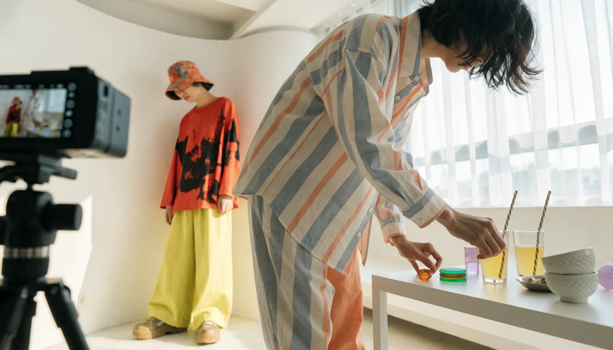

Instagram運用代行 ｜ 東京 ｜ 費用
フォロワーより
「売上」につながる運用を
東京でInstagram運用代行の費用・相場をお調べの方へ。Instagram運用代行とは何か、料金は何で決まり、費用で失敗しないためにどこを見ればいいのか。株式会社NOKTOAが、企画・撮影・編集・分析まで一貫対応する立場から正直に解説します。

Instagram運用代行とは
Instagram運用代行とは、企業に代わってInstagramアカウントの戦略設計・企画・撮影・編集・投稿・分析改善を行うサービスです。フィード・リール・ストーリーズの使い分けや世界観の統一を専門家が担い、継続的に成果へつなげます。
Instagramは、写真・動画の美しさと世界観の一貫性がそのままブランドの印象になるプラットフォームです。投稿を続けるだけでなく、誰に何を届け、どう行動してもらうかという設計がなければ、フォロワーは増えても売上にはつながりません。
自社運用でつまずく多くの企業は、ネタ切れ・更新の停滞・成果の見えなさという壁にぶつかります。Instagram運用代行は、この負荷と専門性を外部に委ねる選択肢です。ただし中身は会社によって大きく異なり、投稿の代行だけのところから、撮影・世界観設計まで担うところまで幅があります。
Instagram運用代行の費用を決める5つの要素
結論：費用は「撮影」と「世界観設計」を含むかどうかで大きく変わります。
Instagram運用代行の料金は、おおむね次の要素で決まります。見積もりを読むときのチェックリストとしてお使いください。
- 月の投稿本数：フィード・リールを月に何本制作するか
- 撮影の有無：素材支給か、プロが撮影に入るか。費用への影響が大きい項目です
- 世界観・デザイン設計：アカウント全体のトーンや統一感をどこまで作り込むか
- リール（動画）の制作：拡散の主役となる動画を何本作るか
- 分析・改善：保存数やリーチを見て次に活かす体制があるか
とくに「撮影」と「世界観設計」を含むかどうかが、月10万円台と月30万円台を分ける境目です。Instagramは見た目の世界観で選ばれるため、素材の質を妥協すると成果につながりにくいのが実情です。
東京でのInstagram運用代行 費用の目安
結論：金額の大小より「何が含まれるか」で比較してください。
東京でのInstagram運用代行は、投稿・編集中心の代行で月10〜20万円、企画・撮影・編集・分析まで含む本格運用で月30〜50万円が一般的な相場です。さらに広告運用や複数アカウントまで含むと月50万円以上になります。
安い見積もりには撮影や世界観設計が含まれていないことが多く、結局「写真は自社で用意してください」となりがちです。NOKTOAは、戦略・企画・撮影・編集・分析までを含むInstagram運用を月額30万円〜（税別）で提供しています。映像制作を本業とする私たちは、運用代行でありながら写真と動画のクオリティを妥協しないのが特長です。
費用で失敗しないための3つの視点
結論：Instagramは「世界観を作れる会社」を選ばないと成果が出ません。
1. 世界観を設計できるか
バラバラな投稿を続けても、ブランドの印象は積み上がりません。アカウント全体のトーンを設計し、統一感を作れる体制かどうかが最重要です。
2. リール（動画）を作れるか
今のInstagramは、リールが新規リーチの主役です。写真だけでなく、惹きつける動画を継続して作れるかで伸びが変わります。
3. 数値で改善できるか
「いいね」より、保存数やプロフィール遷移など売上に近い指標を見て改善できるか。ここが成果を出す運用と、ただの投稿代行の分かれ目です。
NOKTOAは経営理念に「『伝える』を『資産』へ。」を掲げ、Instagramを一過性の発信ではなく、ブランドと顧客接点が積み上がる資産として運用します。
自社運用と運用代行 どちらを選ぶべきか
結論：「人手」と「専門性」が足りないなら、代行のほうが結果的に安くつきます。
Instagram運用を自社でやるか、代行に任せるか。判断のポイントは、社内に「継続できる人手」と「成果を出す専門性」があるかどうかです。担当者が片手間で運用すると、最初は頑張れても更新が止まり、アカウントが放置されてしまうケースが非常に多く見られます。
一方で代行に任せれば、企画・撮影・編集・分析という専門業務をまるごとプロが担い、担当者は本来の業務に集中できます。社員一人を採用・教育するコストと比べれば、運用代行のほうが立ち上がりも早く、成果までの距離も近いことが少なくありません。
NOKTOAは、完全な丸投げだけでなく、社内担当者と二人三脚で進める伴走型の運用にも対応します。将来的に内製化したい場合は、ノウハウを共有しながら運用することも可能です。御社の体制に合わせて、最適な関わり方をご提案します。
料金は 御社のアカウント目的に合わせて設計します
Instagram運用代行の費用は「一律いくら」ではありません。狙う成果、投稿本数、撮影の規模によって最適な体制が変わるからです。NOKTOAは決まったプランを押し付けるのではなく、ご予算と目的を伺って、その範囲で最も成果が出る運用設計を逆算してご提案します。
スモールスタート
月数本から、まずアカウントの世界観と勝ち投稿の型を探る。小さく始めたい方に。
スタンダード
企画・撮影・編集・分析まで一貫対応。本格的にブランドを育てる運用です。
フラッグシップ
広告連携・複数アカウントまで。集客の柱に育てるフェーズに。
「この予算でどこまでできる？」というご相談こそ大歓迎です。まずは月数本から始めて、成果を見ながら広げる進め方もご提案します。ご相談・お見積もり、既存アカウントの簡易診断まで無料で承ります。無理な営業は一切いたしません。
よくあるご質問
Instagram運用代行とは何ですか？
企業に代わってInstagramの戦略・企画・撮影・編集・投稿・分析改善を行うサービスです。フィード・リール・ストーリーズを使い分け、世界観を保ちながら成果につなげます。
Instagram運用代行の費用は東京でいくらですか？
投稿・編集中心で月10〜20万円、企画・撮影・編集・分析込みの本格運用で月30〜50万円が相場です。NOKTOAは一貫対応で月額30万円〜（税別）です。
Instagram運用代行の費用は何で決まりますか？
月の投稿本数、撮影の有無、世界観設計、リール制作、分析改善の範囲で決まります。撮影と世界観設計を含むかが大きな分かれ目です。
写真は自分たちで用意しないとダメですか？
いいえ。NOKTOAは撮影から対応できますので、素材をお持ちでなくても大丈夫です。既存素材の活用と新規撮影、最適な組み合わせをご提案します。